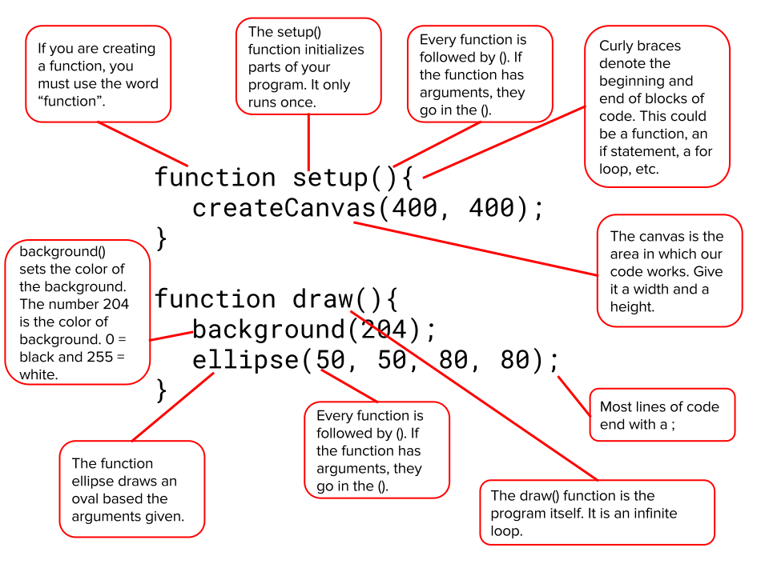

Each program you create will have a similar structure to the one below:
Enter the code from the above picture into the widget below and click "Play". What happens when you change the numbers in ellipse, background, or createCanvas?
Unlike your math class, the canvas in P5 has the origin point in the top-left corner. As you move to the right, the x-value gets bigger, and as you move down the canvas the y-value gets bigger.

Grayscale:
RGB:
RGBA (Transparency):
How to Color Lines/Text:
To draw a line, you use the line command. You must give this command two points on the canvas. The code below will draw a line from point (100, 100) to the point (300, 300):
line(100, 100, 300, 300);To control how thick a line is, use the strokeWeight command. The code below will draw a line with a weight of 5:
strokeWeight(5);
line(100, 100, 300, 300);The stroke command controls the color of a line. Use a number between 0 and 255 to represent the color. One number means grayscale, three numbers are colors, and four numbers is a color plus transparency. Use Adobe Color to choose your color.
In the widget below color the line red. Then add a second line and color it blue.
Two basic shapes are the circle and the rectangle. The command for a circle is ellipse and the command for a rectangle is rect. Both of these commands take four arguments.
The code below will draw a circle at the x-position 50, the y-position 100, with a width of 20, and a height of 20.
ellipse(50, 100, 20, 20);Similarly, you can substitute the word ellipse with rect to draw a rectangle. In the widget below draw a circle. Then change it into a rectangle. What difference do you notice?
By default, shapes have a stroke (exterior line) and a color of white. Like a line, use the stroke command to change the color of the stroke. If you do not want a stroke, use the noStroke(); command. To color a shape, use the fill command. The code below will make a red circle with no stroke:
noStroke();
fill(255, 0, 0);
ellipse(100, 200, 50, 50);In the widget below, create a drawing using code that resembles the image below.
Hint, use the following code to help you draw the mouth:
arc(x-location, y-location, width, height, 0, PI, PI);